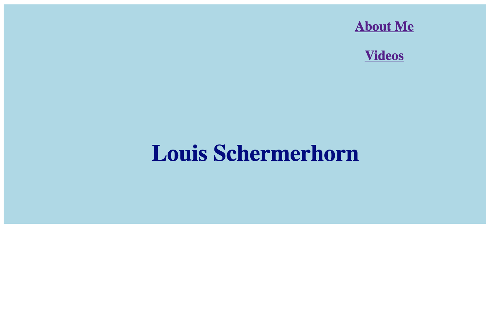

What have I gotten into?
Written
Website
I've decided to take a crack at creating my own website, from scratch. I know the very basics of HTML and CSS based on classes I've taken in college and on-the-job learning from my career in digital marketing. With these skills plus Google, my goal is to build a state-of-the-art personal website.
By "from scratch" I mean "without the aid of a website-building service." In this category I include companies like Squarespace and Wix. I want to have ultimate customizability and I want to learn, when I find myself unable to do something, why that is. As the web evolves and hardware evolves, I want to keep this site updated with the essential building blocks of code. What this does allow for is the help of "tools" such as Github, design software, coding software and, of course, YouTube tutorials.
Yesterday I typed my first code into an HTML and CSS file created by BBEdit. This was pretty simple, but of course I have nothing right now. The site looks like this:

But that's ok. I just want to start to get a feel for the tools that I'll be using. From there, I made a Github account and started learning about repositories and branches. I can see how that's extremely helpful for collaborative development, but still not clear to me if that's how I should be using my site. The GitHub Pages feature seems like a simpler way of keeping my eye on a "live" version of the site. I don't currently think it violates my rule about staying away from website-building services.
Today, I have a clearer picture of what I want to use the website for. And in the back of my head, I think I've known that's where I needed to start anyway. What will people be able to find on the site?
Currently, I see a hierarchy like this:
- Home
- Work
- Career, experience and skillset summary
- SpotCo blog posts
- Website development blog posts
- Play
- Blog posts about video games
- D&D campaign diaries
- Louis In Space Podcast
- Here There Be Dragons Podcast
- Other idle blog posts and creative endeavors
- About Me
- A more personalized bio.
- A timeline? (Thinking about a fun interactive way of visualizing my career)
As this content becomes clearer, that's the reason I started writing this blog post. I think I should keep this up. Would be fun to look back when this is "done" or at least launched!